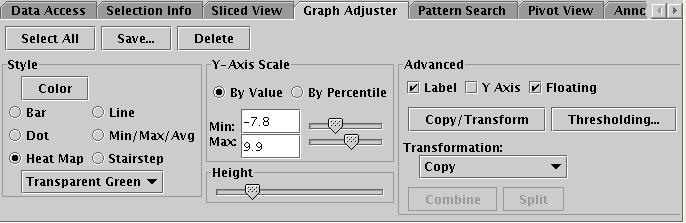
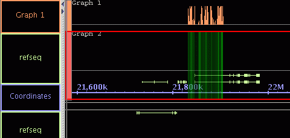
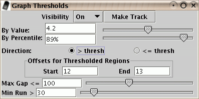
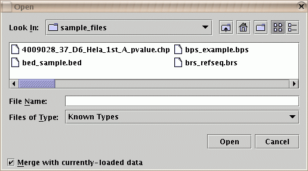
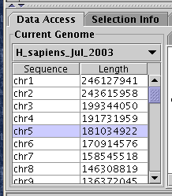
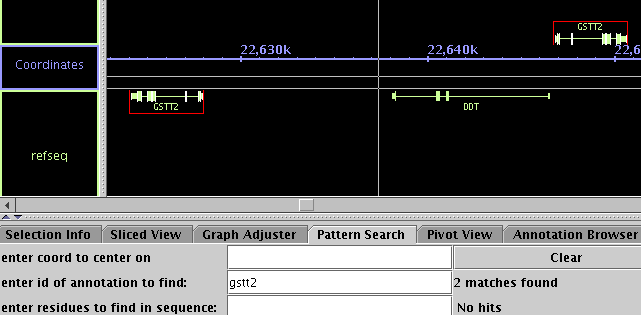
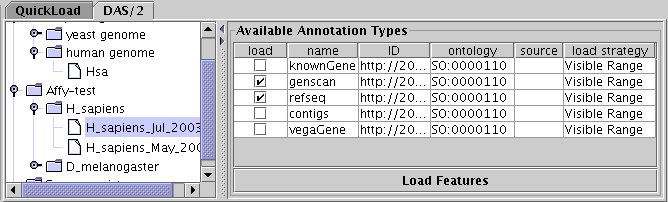
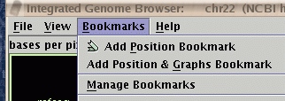

- The "Graph Adjuster" has been redesigned to be easier to use
and it has several new features:

Figure: The "Graph Adjuster" tab.
- Options that are not relevant for the current selection will be disabled
- Graph heights can now be adjusted
- Additional heat-maps are available, including transparent ones

Figure: A graph with a transparent heat-map
- Graphs may now be re-named (right-click on the tier label)
- It is possible to combine multiple graphs in one tier (press "Combine" after selecting 2 or more graphs)
- Graph thresholding is performed in a separate window (press "Thresholding")

Figure: The graph thresholding dialog.
- All IGB file types can now be opened in the current genome, or in a new one, with File->Open
- By default, "merge" is selected and data will be added to the current genome
- If "merge" is not selected, a new temporary genome will be created

Figure: The "File->Open" dialog, with the "merge" checkbox.
- It is now possible to open Affymetrix files of the "CHP" file type for tiling arrays. (IGB cannot open "CHP" files from expression arrays.)
- You may now access any previously-loaded genome and sequence with the controls on the left-hand side of the "Data Access" tab.

Figure: The "Data Access" tab now gives access to all loaded genomes.
- IDs of data from all file types is now indexed so that the IDs appear in the "Annotation Browser" tab and the search-by-ID function works for data loaded from all file types
- Multiple items can now be indexed with the same ID
- Searching for an ID will result in all matching items being selected
- Searching is no longer case-sensitive

Figure: Searching by ID is not case-sensitive and can find multiple items.
- The DAS/2 data transfer specification continues to evolve (see biodas.org). This version of IGB is up-to-date with the current known DAS/2 servers
- The interface for data loading from DAS/2 servers has been
improved. Zoom-in to a small region, place a check mark by the items
you'd like to load, then press "Load Features"

Figure: The DAS/2 interface.
- The "Bookmark Manager" is now opened with "Bookmarks->Manage Bookmarks"

Figure: To access the "Bookmark Manager", choose "Bookmarks->Manage Bookmarks".
IGB is part of the GenoViz project. Source code for IGB is released under the Common Public License, v1.0 an OSI approved open source license. IGB uses other open source software packages which are covered by their own open source licenses.
IGB is Copyright (c) 2000-2006 Affymetrix, Inc. Research and development of IGB is supported in part by NIH grant R01HG003040